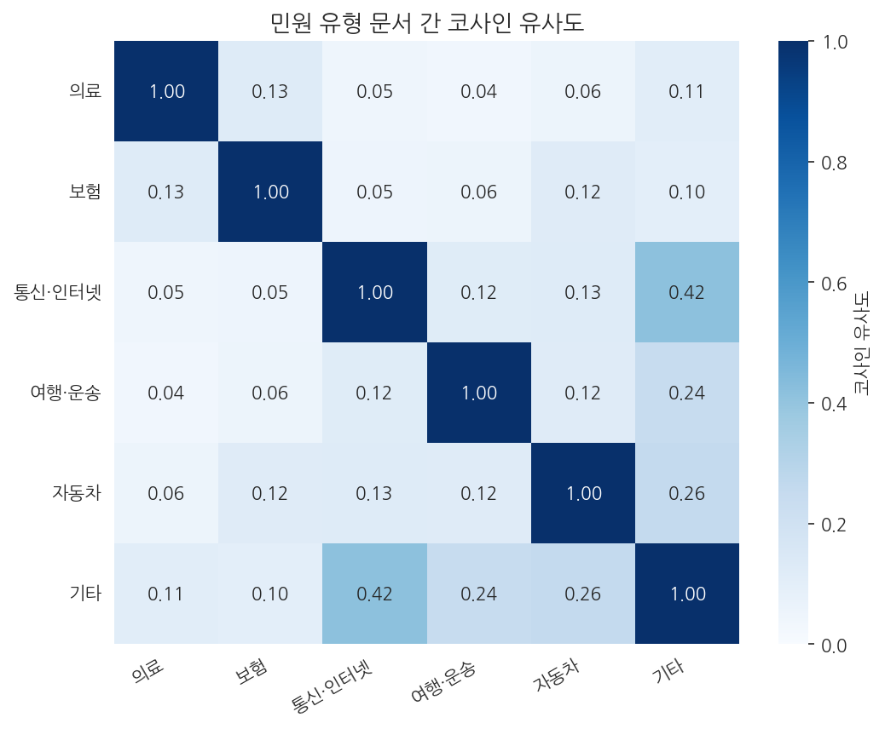

10주차 2회차. 에이전트로 민원 텍스트 분석하기
이 실습에서 하는 것
1회차에서 글을 숫자로 바꿔 분석하는 원리를 배웠다. 이번 실습에서는 그 전 과정을 에이전트와 함께 실제 데이터로 수행한다. 재료는 1회차에서 소개한 공정거래위원회의 소비자 민원 상담 사례 567건이다. 데이터를 입수하고, 한국어 텍스트를 전처리하고, 핵심어 빈도를 그림으로 그리고, 민원을 유형별로 분류한다. 분류는 두 가지 방법으로 한다. 키워드 규칙에 따른 통계적 분류와, 에이전트가 민원을 직접 읽고 판단하는 분류다. 마지막에 두 결과가 어긋나는 지점을 표본으로 뽑아 내 눈으로 읽고, 누가 맞았는지 판정한다.
이 실습이 끝나면 다음 산출물이 폴더에 남는다.
- 정리된 민원 텍스트 데이터와 전처리 규칙(불용어 목록 포함)
- 핵심어 빈도 막대그래프와 유형별 특징어 그림
- 규칙 분류와 에이전트 분류의 비교표, 그리고 불일치 사례에 대한 나의 판정 기록
오늘의 숨은 주제는 검증이다. 통계적 방법과 에이전트라는 두 분석기를 서로 맞세워 보면, 어느 한쪽만 쓸 때는 보이지 않던 오류가 드러난다.
준비물
| 구분 | 내용 |
|---|---|
| 폴더 | 학기 프로젝트 폴더 (data, code, figures 하위 폴더) |
| 데이터 | data/minwon_cases_2021.csv (공정거래위원회_소비자 민원학습데이터 모범상담 사례_20211227. 공공데이터포털 www.data.go.kr/data/15098335/fileData.do 에서 로그인 없이 내려받을 수 있다. 수업 자료실에도 같은 파일을 올려 둔다) |
| 도구 | VSCode + Claude Code, 4주차에 구축한 uv 환경 (pandas, scikit-learn, matplotlib, seaborn, koreanize-matplotlib) |
| 참고 코드 | code/ch10_text.py (이 실습의 전 과정을 담은 완성 코드. 막힐 때 참조) |
| 선수 내용 | 10주차 1회차 (문서-단어 행렬, TF-IDF), 7주차 (전처리와 지저분한 데이터), 2주차 (환각, 비결정성) |
2.1 텍스트 데이터 입수
첫 단계는 데이터 확보다. 민원 원문 데이터는 사실 구하기가 쉽지 않다. 개인정보 때문에 민원 원문 자체는 대부분 기관 내부에만 있고, 포털에는 건수 통계만 개방된 경우가 많다. 이번 데이터는 그 가운데 원문이 공개된 드문 사례로, 소비자 상담이라는 민원의 실제 텍스트(제목, 내용, 답변)를 담고 있다. 공공데이터포털에서 "민원"으로 검색해 보면 이런 텍스트형 데이터와 통계형 데이터가 섞여 나오는데, 5주차에서 배운 대로 미리보기와 메타데이터를 확인해 원문이 든 쪽을 고르는 눈이 필요하다.
파일을 data 폴더에 넣었으면, 에이전트에게 첫 개관을 시킨다.
"data 폴더의 minwon_cases_2021.csv를 읽고 (1) 몇 건이 들어 있는지, (2) 어떤 열이 있는지, (3) 첫 3건의 제목과 내용을 보여 줘. 읽는 중에 문제가 생기면 어떤 문제인지 그대로 보고하고, 임의로 처리하지 말고 멈춰 줘."
예상되는 에이전트의 행동. 여기서 오늘의 첫 사건이 일어난다. 이 파일을 pandas로 그냥 읽으면 오류가 난다. "Expected 4 fields in line 251, saw 5" 같은 메시지다. 원본 CSV에 형식이 어긋난 행이 3건 섞여 있기 때문이다. 1건은 쉼표 처리가 어긋나 열이 5개로 읽히고, 2건은 답변 열이 비어 있다. 7주차에서 배운 그대로다. 현실의 공공데이터는 텍스트 데이터라고 예외가 아니다. 에이전트는 지시문의 마지막 문장 덕분에 임의로 처리하지 않고 이 문제를 보고할 것이다. 만약 지시문에 그 문장이 없었다면, 에이전트가 조용히 문제 행을 버리고 "잘 읽었습니다"라고 보고했을 수도 있다. 무엇을 버렸는지 사용자가 모른 채로.
보고를 받았으면 처리 방침을 여러분이 정해서 다시 지시한다. 우리는 제목과 내용만 분석하므로, 열이 5개로 읽히는 1건만 제외하고 답변이 빈 2건은 남기기로 한다. "열 개수가 어긋나는 행만 건너뛰고 읽은 뒤, 제외한 건수와 남은 건수를 보고해 줘." 이렇게 하면 568건 중 1건이 제외되어 567건이 남는다.
검증. 두 가지를 확인한다. 첫째, 건수. 흥미롭게도 이 파일은 VSCode로 열어 줄 수를 세는 고전적 검증이 통하지 않는다. 민원 내용 안에 줄바꿈이 들어 있어 물리적 줄 수는 658줄로, 데이터 건수(568건)와 전혀 다르기 때문이다. 텍스트 데이터에서는 "1행 = 1건"이 깨질 수 있다는 것 자체가 오늘의 첫 교훈이다. 대신 에이전트에게 "사건번호가 고유한지, 몇 개인지 세어 줘"라고 별도의 방법으로 다시 세게 해 567건과 맞는지 대조한다. 둘째, 내용의 생김새. 첫 몇 건의 제목("고지의무 위반과 인과관계 없는 암환자에 사망 보험금 지급 거부" 등)과 내용을 읽고, 이것이 분석하려는 대상(민원 텍스트)이 맞는지 눈으로 확인한다. 열 이름이 "사건제목(ACCIDENT_TITLE)"처럼 한글과 영문 병기로 되어 있다는 것도 이때 알게 된다. 에이전트에게 열 이름을 제목, 내용, 답변으로 단순화해 달라고 해 두면 이후 작업이 편하다.
2.2 전처리: 형태소, 불용어
이제 글을 셀 수 있는 형태로 만든다. 1회차에서 배웠듯 한국어는 조사와 어미 때문에 그냥 공백으로 자르면 "쓰레기가"와 "쓰레기를"이 남남이 된다. 형태소 분석기가 정석이지만 우리 환경에는 설치되어 있지 않으므로, 단순 규칙으로 간다. 이 제약을 지시문에 명시하는 것이 중요하다. 그러지 않으면 에이전트가 형태소 분석기 패키지를 새로 설치하려 들 수 있다.
"민원의 제목과 내용을 합쳐 텍스트 분석을 준비해 줘. 형태소 분석기는 설치되어 있지 않고 새 패키지 설치도 하지 말 것. 대신 (1) 한글이 아닌 글자는 제거하고 공백으로 자른 뒤, (2) 단어 끝의 흔한 조사(가, 을, 는, 에서 등)를 떼고, (3) 두 글자 미만 단어와 불용어를 제거하는 간단한 규칙으로 토큰화해 줘. 그다음 scikit-learn의 CountVectorizer로 문서-단어 행렬을 만들고, 행렬의 크기와 전체 최빈 단어 20개를 보여 줘. 코드는 code 폴더에 저장해 줘."
예상되는 에이전트의 행동. 에이전트가 토큰화 함수를 짜고 문서-단어 행렬을 만들어 "567행 x 약 6,000열" 규모의 행렬과 최빈 단어 목록을 보고한다. 그런데 첫 실행의 최빈 단어 목록을 보면 이상한 손님들이 끼어 있을 것이다. 실제로 이 데이터를 처음 돌리면 "받을"(110회), "개월"(103회), "만원"(91회), "있을까"(83회) 같은 토큰이 상위권에 나타난다. "받을"과 "있을까"는 동사 조각이고 "만원"과 "개월"은 단위다. 어느 쪽도 민원의 주제를 말해 주지 않는다.
이것이 전처리의 실제 모습이다. 한 번에 끝나지 않고, 결과를 눈으로 보고 규칙을 고쳐 다시 돌리는 순환이다. 이상한 토큰들을 불용어 목록에 추가하라고 지시하고 재실행한다.
"최빈 단어 목록에 '받을', '있을까' 같은 동사 조각과 '만원', '개월' 같은 단위가 섞여 있어. 이런 토큰들을 불용어 목록에 추가하고, '-습니다', '-하는'처럼 서술어로 끝나는 토큰을 거르는 규칙도 더해서 다시 실행해 줘. 최종 불용어 목록을 코드 주석과 함께 보여 줘."
검증. 재실행 후 최빈 단어 20개를 처음부터 끝까지 눈으로 읽는다. 판단 기준은 하나다. 각 단어가 "이 민원 뭉치가 무엇에 관한 것인지"를 말해 주는가. 완벽을 기대하지는 않는다. 실제 최종 결과에도 "구입"(79회)과 "구입한"(67회)이 따로 세어져 남는데, 이는 단순 규칙의 한계로 알고 넘어가면 된다. 중요한 것은 불용어 목록이 코드에 명시되어 있어서, 누가 언제 다시 돌려도 같은 결과가 나오고, 어떤 판단이 개입했는지 추적할 수 있다는 점이다. 7주차의 정제 로그와 같은 원리다.
2.3 핵심어 빈도 분석과 시각화
전처리가 자리 잡았으니 이제 세어서 그린다.
"문서-단어 행렬에서 전체 최빈 단어 20개를 뽑아 가로 막대그래프로 그려 줘. 막대 옆에 등장 횟수 숫자를 붙이고, 한글이 깨지지 않게 koreanize_matplotlib를 사용하고, figures 폴더에 PNG로 저장해 줘. 그림을 보고 이 민원 뭉치의 성격을 세 문장으로 요약해 줘."
예상되는 에이전트의 행동. 1회차의 그림 10-2와 같은 그래프가 만들어진다. "환급"(207회)이 1위, "보상", "계약", "수술", "병원"이 뒤를 잇는 모습이다. 에이전트의 요약문도 함께 온다. "환불·보상 요구와 계약 분쟁이 중심이고, 의료 관련 민원이 큰 비중을 차지합니다" 같은 내용일 것이다.
검증. 여기서 텍스트 분석 특유의 검증 요령을 하나 배운다. 보고된 숫자를 다른 방법으로 다시 세어 보는 것이다. 에이전트에게 "환급이라는 글자가 원본 텍스트에 몇 번 나오는지, 토큰화를 거치지 않고 문자열 검색으로 세어 줘"라고 지시해 보라. 결과는 207이 아니라 265가 나온다. 셋째 방법으로 "환급이 들어간 민원이 몇 건인지" 물으면 126이 나온다. 세 숫자가 다 다르지만 모두 맞는 숫자다. 각각 "환급으로 정리된 토큰의 수"(환급을, 환급이 등이 합쳐진 것), "환급이라는 글자의 등장 횟수"(환급금, 환급받고 같은 다른 단어 속의 등장까지 센 것), "환급을 언급한 문서 수"를 센 것이기 때문이다. 보고서에 "환급 207회"라고 쓸 때는 무엇을 어떻게 센 숫자인지 정의를 함께 적어야 하고, 에이전트의 숫자를 검증할 때도 같은 정의로 세었는지부터 맞춰야 한다. 숫자가 다르다고 곧바로 "에이전트가 틀렸다"고 결론 내리면 그것도 오판이다.
"이 단어가 얼마나 나오는가"에는 최소 세 가지 다른 답이 있다. 토큰 빈도, 문자열 등장 횟수, 포함 문서 수다. 실제 데이터에서 "환급"은 각각 207, 265, 126이었다. 분석 보고서의 수치 검증이 어긋날 때, 틀린 것이 아니라 정의가 다른 경우가 많다. 검증의 첫 질문은 "그 숫자, 무엇을 센 것인가"다.
2.4 에이전트 직접 분류 vs 통계 분류: 두 결과 비교
이제 이 실습의 본론이다. 민원을 유형별로 나눠 보자. 분류 체계는 데이터를 훑어본 결과를 바탕으로 우리가 정한다. 의료, 보험, 통신·인터넷, 여행·운송, 자동차, 그리고 어디에도 안 드는 기타의 여섯 범주다.
방법 1: 키워드 규칙 분류. 통계적 방법의 가장 단순한 형태로, 특정 단어가 있으면 특정 유형으로 배정하는 규칙을 만든다.
"민원을 여섯 유형(의료, 보험, 통신·인터넷, 여행·운송, 자동차, 기타)으로 나누는 키워드 규칙 분류를 만들어 줘. 예를 들어 제목에 [내과] 같은 진료과 표시가 있거나 수술·진료가 나오면 의료, '보험'이 나오면 보험, '통신·휴대폰·인터넷'이 나오면 통신·인터넷 식으로. 규칙이 겹칠 때의 우선순위도 정해서 코드에 명시하고, 유형별 건수를 보여 줘. 그다음 유형별로 민원을 이어 붙인 여섯 개의 유형 문서를 만들어 TfidfVectorizer로 유형별 특징어 상위 5개를 뽑고, 유형 문서 간 코사인 유사도도 계산해 줘."
예상되는 결과. 실제로 실행하면 유형별 건수는 기타 253건, 의료 128건, 보험 70건, 통신·인터넷 54건, 자동차 33건, 여행·운송 29건이 된다. 유형별 TF-IDF 특징어(1회차 그림 10-3)를 보면 의료에서 "수술·병원", 보험에서 "보험회사·보험금", 여행·운송에서 "여행사·항공사"가 뽑혀, 분류가 대체로 말이 되는 방향임을 시사한다.
그런데 두 가지 경고 신호도 함께 온다. 첫째, 기타가 253건으로 전체의 45%나 된다. 1회차 유의 박스에서 말한 그대로, 잔여 범주가 절반에 육박하면 분류 체계가 데이터의 현실을 다 담지 못하고 있다는 신호다(실제로 기타의 특징어는 "사업자, 환급, 제품, 계약"으로, 일반 상품·서비스 계약 분쟁이라는 덩어리가 이름 없이 뭉쳐 있음을 보여 준다). 둘째, 유형 문서 간 코사인 유사도를 보면 문제 지점이 더 구체적으로 드러난다.

그림 10-4를 읽어 보자. 행과 열이 여섯 유형이고, 칸의 숫자는 두 유형 문서가 단어를 얼마나 비슷하게 쓰는지를 잰 코사인 유사도다(1에 가까울수록 닮음). 대각선의 1.00은 자기 자신이니 당연하고, 볼 것은 그 밖의 칸이다. 의료와 보험은 다른 유형들과의 유사도가 0.13 이하로 낮아 어휘가 뚜렷이 구별되는 반면, 통신·인터넷과 기타의 유사도는 0.42로 유독 높다. 두 범주가 어휘 면에서 잘 갈라지지 않는다는 뜻이며, 잠시 뒤 교차 검증에서 이 지점이 정확히 사고 현장으로 밝혀진다.
방법 2: 에이전트 직접 분류. 이번에는 에이전트에게 민원을 읽혀서 분류시킨다. 567건 전부를 읽히면 시간이 오래 걸리므로, 무작위 표본 30건으로 두 방법을 비교한다.
"전체에서 무작위 표본 30건을 뽑아 CSV로 저장해 줘 (재현할 수 있게 난수 시드를 고정하고 시드 값을 알려 줘). 그다음 그 30건의 제목과 내용을 네가 직접 읽고, 같은 여섯 유형 중 하나로 분류해 줘. 키워드 검색이 아니라 내용을 읽고 판단할 것. 각 건에 대해 (1) 규칙 분류 결과, (2) 너의 분류, (3) 둘이 다른 경우 그 이유를 표로 정리해 줘."
예상되는 결과. 에이전트가 30건을 읽고 표를 만들어 준다. 실제로 저자가 이 지시를 실행했을 때의 결과는 30건 중 25건 일치(83%), 5건 불일치였다. LLM의 비결정성(2주차) 때문에 여러분의 결과는 한두 건 다를 수 있다. 중요한 것은 일치율 자체보다 다음 단계, 곧 불일치한 5건의 정체다.
2.5 교차 검증: 표본을 직접 읽어 분류가 맞는지 확인
두 분류기가 어긋난 문서는 최소한 한쪽이 틀린 문서다. 그래서 불일치 사례만 골라 읽는 것은, 무작위로 읽는 것보다 훨씬 효율이 좋은 검증법이다. 이제 에이전트 없이, 여러분이 직접 5건을 읽고 심판이 된다.
표 10-4. 규칙 분류와 에이전트 분류의 불일치 5건 (실제 실행 결과)
| 민원 (요지) | 규칙 분류 | 에이전트 분류 | 직접 읽은 판정 |
|---|---|---|---|
| 인터넷으로 산 건강식품, 스티커 제거를 이유로 반품 거부 | 통신·인터넷 | 기타 | 에이전트가 타당. 물품 반품 분쟁인데 "인터넷"이라는 단어 때문에 통신으로 쓸려 감 |
| 인터넷 쇼핑몰에서 산 코트, 사이즈 불일치 반품 거부 | 통신·인터넷 | 기타 | 위와 같은 오류 유형 |
| 인터넷 주문 상품을 택배기사가 분실 | 통신·인터넷 | 여행·운송 | 판단 유보. 택배 분쟁은 여섯 범주 어디에도 딱 맞지 않음. 범주 설계의 문제 |
| 홈페이지 보고 계약한 방문 음악교습 청약철회 | 통신·인터넷 | 기타 | 에이전트가 타당. 교육 서비스 분쟁인데 "인터넷 홈페이지"라는 표현에 규칙이 걸림 |
| 제목만 "간암 진단이 지연된 사례", 내용은 "첨부파일 참조" | 기타 | 의료 | 에이전트가 타당. 다만 내용이 비어 있어 어느 방법으로도 정보가 부족한 건 |
이 다섯 건이 가르쳐 주는 것이 오늘 실습의 결론이다.
첫째, 규칙 분류의 오류에는 패턴이 있다. 다섯 건 중 네 건이 "인터넷"이라는 키워드 때문에 통신·인터넷으로 잘못 쓸려 간 사례다. 규칙은 단어의 문맥을 모르기 때문에, 인터넷"으로 산" 코트와 인터넷 "요금" 분쟁을 구별하지 못한다. 그림 10-4에서 통신·인터넷과 기타의 유사도가 0.42로 유독 높았던 것이 바로 이 혼선의 예고편이었다.
둘째, 에이전트의 판단이 이 표본에서는 대체로 타당했지만, 그렇다고 "에이전트가 이겼으니 앞으로 다 맡기면 된다"는 결론은 성급하다. 이 판정 자체가 표본 30건짜리 검증일 뿐이고, 에이전트는 비결정적이며(같은 지시를 다시 주면 한두 건은 다르게 분류할 수 있다), 이번 데이터에서 규칙이 진 것은 규칙을 우리가 엉성하게 만든 탓이기도 하다. 규칙에서 "인터넷" 키워드를 빼고 "통신, 요금제, 휴대폰"만 남기면 네 건의 오류는 사라진다. 검증이 개선의 지도를 그려 준 셈이다.
셋째, 기계 둘이 모두 처리할 수 없는 문제도 있다. 택배 분쟁 건은 분류 체계 자체의 구멍이고, "첨부파일 참조" 건은 데이터의 구멍이다. 이런 문제는 어떤 분류기도 대신 판단해 줄 수 없으며, 발견하는 유일한 방법이 사람이 원문을 읽는 것이다.
567건 전부를 읽을 수 없을 때, 어디부터 읽어야 검증 효율이 높을까. 무작위 표본도 좋지만, 서로 다른 방법으로 분석한 두 결과의 불일치 지점은 오류가 있을 확률이 특히 높은 곳이다. 두 분석기가 같은 답을 낸 문서는 둘 다 맞았을 가능성이 높고(둘 다 같은 방식으로 틀리는 경우도 있으니 확신은 금물이다), 어긋난 문서는 반드시 한쪽이 틀렸다. 저렴한 통계 분류를 전체에 돌리고, 에이전트 분류를 표본에 돌리고, 어긋난 곳을 사람이 읽는다. 이 삼단 구조는 텍스트 분석뿐 아니라 AI 산출물 검증 일반에 쓸 수 있는 틀이다.
마지막으로 예고 하나. 오늘 에이전트는 민원을 읽고 "판단"했다. 다음 주(11주차)에는 에이전트가 법령과 지침을 읽고 "근거를 인용하며 답하게" 만든다. 판단의 품질을 검증하는 오늘의 기술이, 근거의 품질을 검증하는 다음 주의 기초가 된다.
검증 체크리스트
- 원본 파일의 건수(568건)와 읽기에서 제외된 행(1건)을 에이전트 보고와 대조했다
- 첫 실행의 최빈 단어에서 이상한 토큰(동사 조각, 단위)을 찾아 불용어에 추가하고 재실행했다
- 최종 최빈 단어 20개를 눈으로 읽고 각 단어가 주제어인지 확인했다
- "환급"의 세 가지 셈법(토큰 207, 문자열 265, 문서 126)의 차이를 설명할 수 있다
- 규칙 분류의 유형별 건수를 확인하고, 기타 비중(45%)이 의미하는 바를 한 문장으로 말할 수 있다
- 에이전트 직접 분류와 규칙 분류의 불일치 사례를 모두 직접 읽고 판정을 기록했다
- 난수 시드를 고정해 표본 30건을 다시 뽑아도 같은 표본이 나오는지 확인했다
자주 겪는 문제
| 증상 | 원인 | 해결 |
|---|---|---|
| CSV를 읽다가 "Expected 4 fields" 오류가 난다 | 원본에 쉼표 처리가 어긋난 행이 있음 | 형식이 어긋난 행은 건너뛰게 지시하되, 몇 건을 건너뛰었는지 보고받아 기록 |
| 에이전트가 형태소 분석기(konlpy 등)를 설치하려 한다 | 지시문에 환경 제약을 안 적음 | "새 패키지 설치 금지, 조사 떼기 규칙으로"를 지시문에 명시. 설치 승인 요청이 오면 거부 |
| 최빈 단어에 "받을", "있을까" 같은 조각이 계속 남는다 | 단순 토큰화의 한계 | 정상이다. 불용어 목록에 추가하며 반복 개선. 어디까지 다듬을지는 분석 목적에 따라 판단 |
| 그래프의 한글이 네모(□)로 깨진다 | 한글 폰트 미설정 | koreanize_matplotlib를 import하도록 지시 (8주차와 동일) |
| 에이전트가 567건 전체를 직접 읽고 분류하겠다며 한참 걸린다 | 표본 지시 누락 | 직접 분류는 표본 30건으로 제한. 전체는 규칙 분류가 맡는 분업 구조를 지시문에 명시 |
| 같은 분류 지시를 다시 실행하니 몇 건의 유형이 달라졌다 | LLM의 비결정성 (2주차) | 이것 자체가 관찰 소재다. 달라진 건을 기록하고, 흔들리는 건일수록 직접 읽어 판정 |
제출 과제
과제 10-A. 민원 텍스트 분석 미니 보고서. 오늘의 산출물을 2쪽 이내로 정리한다. (1) 데이터 출처와 전처리 규칙(불용어 목록 포함), (2) 핵심어 빈도 그래프와 세 문장 해석, (3) 규칙 분류와 에이전트 분류의 비교표, (4) 불일치 사례에 대한 나의 판정과 근거. 평가 기준은 그래프의 완성도가 아니라 검증 절차의 충실함, 특히 (4)에서 판정의 근거를 원문에서 끌어왔는지다.
과제 10-B. 규칙 개선 실험. 2.5절의 발견을 반영해 키워드 규칙을 한 군데 이상 수정하고(예: "인터넷" 키워드 제거), 표본 30건에 대한 일치율이 어떻게 달라지는지 실행해 보라. 일치율이 오르든 내리든, 왜 그렇게 되었는지 불일치 목록의 변화로 설명하라.
과제 10-C (선택). 내 프로젝트에 적용. 학기 프로젝트 데이터에 텍스트 열(기관명, 사업명, 비고 등)이 있다면, 오늘 배운 빈도 분석을 적용해 보고 흥미로운 단어 3개를 골라 그 단어가 든 행을 직접 확인해 보라.